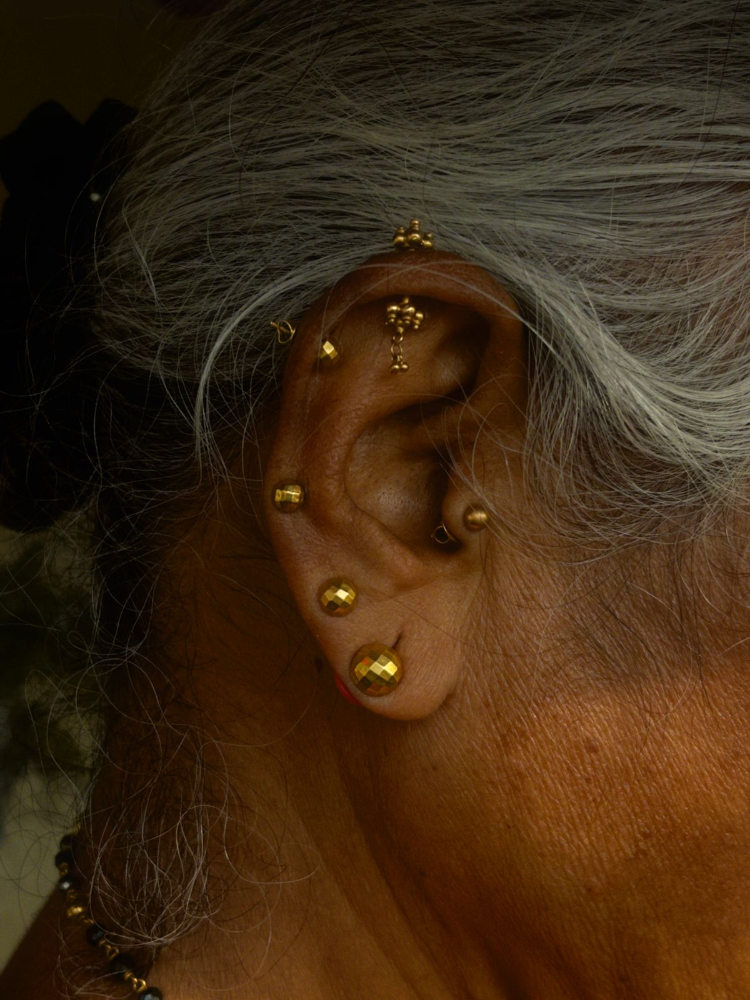

Case Chart 03
A curated ear, in three sittings
Outcome · All healed, zero setbacks- Client
- Priya, 47. No cartilage piercings; two healed lobes from her teens.
- The ask
- “The ears in the magazines” — six piercings, ideally in one visit, finished in gold.
- The chart
- Her ear was drawn and charted before anything was pierced. Sitting one, October: a conch, 16G titanium. Sitting two, the following February: a flat and a helix. Downsizes at week 7–8 after each sitting, final checks at month 12. The industrial she wanted most was the one her anatomy would not carry — a flat took its place, and the chart says why. When the helix ran slow in month five, the gold finish moved from June to September. The dates moved; nobody pretended otherwise.
- The outcome
- Five piercings, all healed, no bumps, no retirements. Finished in solid 14k gold ends the autumn after we started — fourteen months after the first consultation, which is what a whole ear honestly takes.
“Mara drew my ear on a chart before she touched it, and told me which two piercings we were not doing yet. Seven months sounds slow until you realise I never had one bad week with any of them.”
— Priya, Case Chart 03
